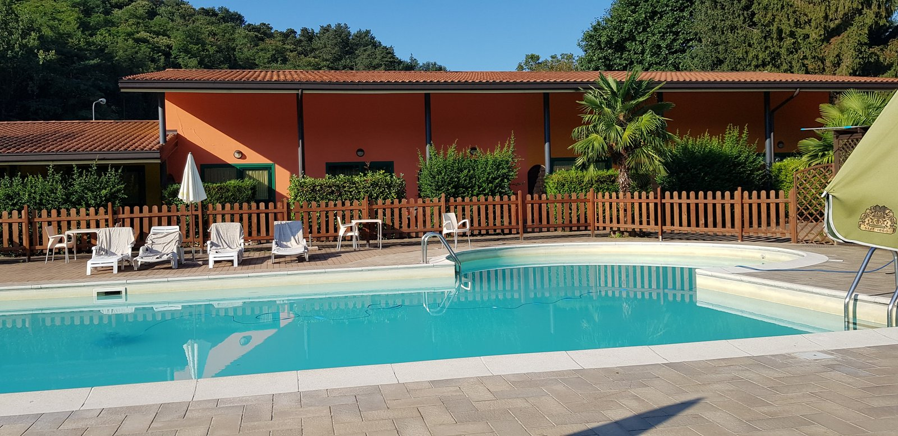
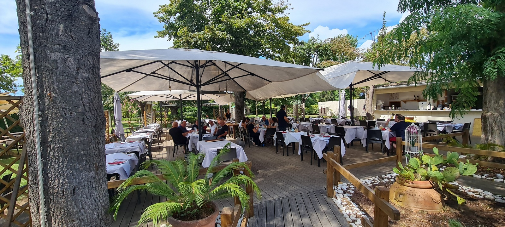
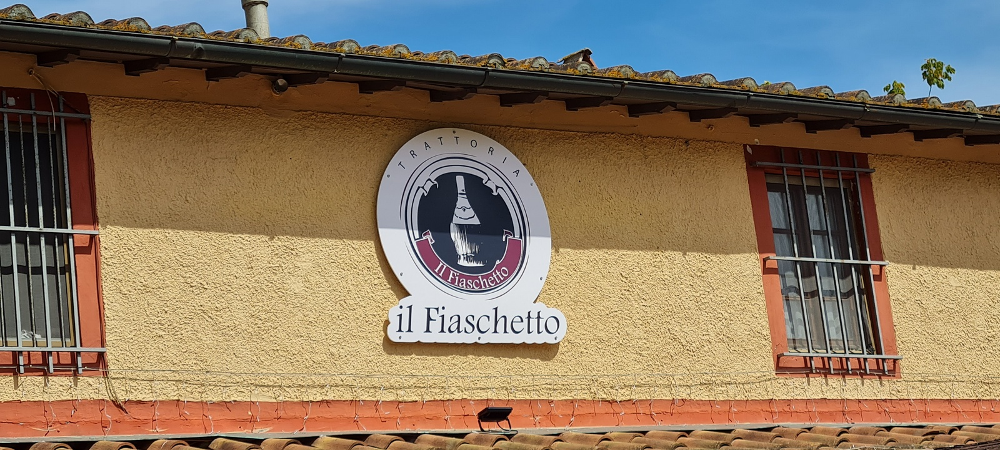

Auf der Hinfahrt haben wir wieder einen Zwischenstopp im Hotel La Perla einlgelegt. Nach einer reibungslosen Anreise verlief der erste Tag eher ruhig. Abends wurde im Restaurant ein Menü serviert, unter anderem mit Rigatelle con Pesto di noci! Das müssen wir die Tage noch einmal ausprobieren.

Die Nachtruhe wurde allerdings früh morgens von einem infernalen Krachen und Poltern beendet. Was war passiert? Zum Glück war niemand die Treppe heruntergefallen. Vielleicht war es auch in der Nachbarwohnung. Die Überraschung kam als ich ins Badezimmer ging: Der Badezimmerschrank war von der Wand gekommen und lag quer auf dem Boden.
Irgendwas ist eben immer.
Auf der Fahrt in Richtung Riotorto sind wir wieder über Genua an der Küste entlang gefahren. Gegen mittag waren wir kurz vor Pisa und sind einfach irgendwo abgefahren um schließlich in dem kleinen Örtchen Lago di Puccini zu landen. Die Trattoria Il Fiaschetto sah nicht nur einladend aus, sie bot uns auch eine exquisite Vorspeisenplatte sowie hausgemachte Ravioli.


created with
Website Builder Software .